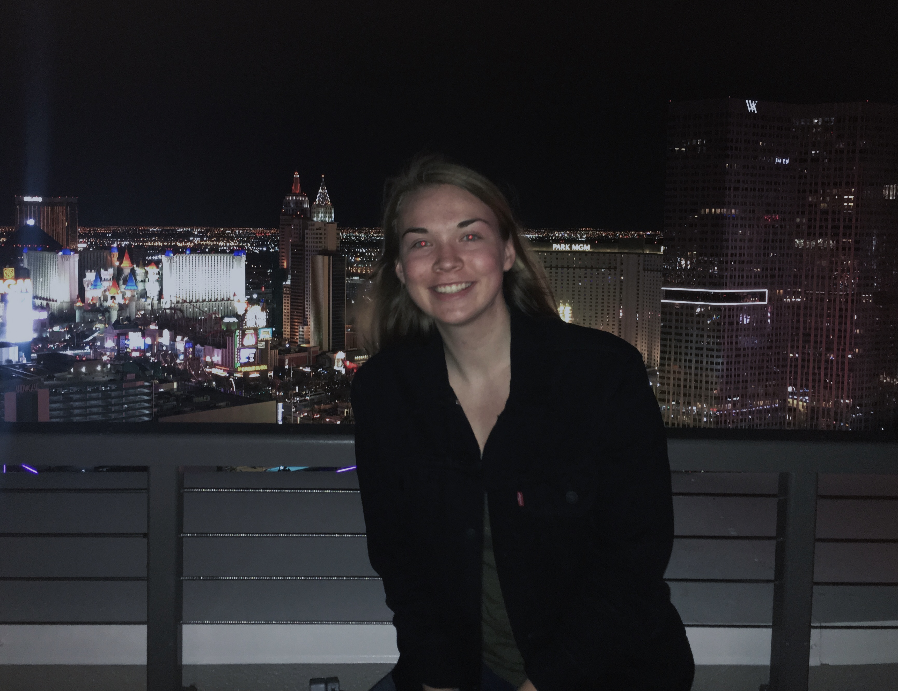

About Me
By: Katherine Rochon 
Hello!
My name is Katherine Rochon. I am currently a fourth-year student at MSU,
studying Computer Science with a cognate in Media and Information. I enjoy the
logic behind coding and being able to systematically solve problems. I hope to
go into either software or web development after college. I also plan to move out of Michigan
and immerse myself in a big city. Before moving to college, I lived in the same
small town in the same house my entire life. As nice as that was, I am ready for
a change and seek to go outside of my comfort zone. Although, I never moved growing
was lucky enough to have parents who love to travel. This introduced me to my love
for architecture and gave me a glimpse of what could be in my future.
Aside from school, I enjoy:
- Video Games
- Architecture
- Board Games
- Philosophy
- Running